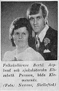

Alf Bertil Johannes Asplund
Folkskollärare 1973, mellanstadielärre, pedagogisk utvecklare av Skellefte-Tekniken.
| Född: | 1948-06-30 Ö. Nyliden, Skellefteå lfs, Skellefteå sn. [1] |
|---|
| Vigsel: | 1973-06-30 Klemensnäs, Sankt Örjan fs, Skellefteå kn. [2] |
|---|
| Levde: | 1991 Nyliden 1:10, Nyliden, Skellefteå lfs, Skellefteå kn. [2] |
|---|
| Barn: |
|---|
| Per Johan Asplund (1973 - ) |
| Alf Magnus Asplund (1977 - ) |
| Elin Elisabeth Asplund (1981 - ) |
Noteringar
Bertil Asplund har sammanställt ett intressant material, som lyfter fram sin egen pedagogiska utveckling och skrivande och sin kreative bror Helges insatser.
Dokumentet heter: ...\_pdf-docs\bertil_helge_asplund.pdf 2018-04-20
2000-2018:
Utvecklingen av Skellefte-Tekniken fortsatte men nu i rollen som egen företagare genom att:
¤ Skriva instruktioner för laborativa utmaningar
¤ Tillhandahålla det anpassade materialet som krävdes för laborationerna
¤ Utforma lärarhandledningar och supporta användarna
¤ Skriva faktaböcker med enkla ord och illustrativa bilder
¤ Anordna fortbildningskurser för intresserade pedagoger runt om i Sverige
¤ Spela in digitala introduktions - och informationsfilmer som delvis lades på nätet.
Bolagsengagemang
www.skelleftetekniken.se
www.bja-asplund.com/
www.allabolag.se/5567896948/befattningar
www.allabolag.se/9164774649/HB_BJA-ASPLUND_NYLIDEN
Personhistoria
| Årtal | Ålder | Händelse |
|---|
| 1948 |
|
Födelse 1948-06-30 Ö. Nyliden, Skellefteå lfs, Skellefteå sn [1] |
| 1949 |
11 mån |
Makan Kerstin Elisabeth Persson Asplund föds 1949-05-30 Vittangi fs, Kiruna sn |
| 1955 |
6 år |
Brodern Nils Anders Åke Asplund föds 1955-04-28 Ö. Nyliden, Skellefteå lfs, Skellefteå sn [1] |
| 1973 |
24 år |
Sonen Per Johan Asplund föds 1973-02-07 Klemensnäs, Sankt Örjans fs, Skellefteå kn [3] |
| 1973 |
25 år |
Vigsel Kerstin Elisabeth Persson Asplund 1973-06-30 Klemensnäs, Sankt Örjan fs, Skellefteå kn [2] |
| 1977 |
28 år |
Sonen Alf Magnus Asplund föds 1977-02-25 Klemensnäs, Sankt Örjans fs, Skellefteå kn [3] |
| 1977 |
29 år |
Fadern Johan Gunberg (Gunnar) Asplund dör 1977-11-22 Ö. Nyliden, Skellefteå lfs, Skellefteå kn [4] |
| 1981 |
32 år |
Dottern Elin Elisabeth Asplund föds 1981-05-26 Nyliden 1:10, Nyliden, Skellefteå lfs, Skellefteå kn [2] |
| 1991 |
|
Levde Kerstin Elisabeth Persson Asplund 1991 Nyliden 1:10, Nyliden, Skellefteå lfs, Skellefteå kn [2] |
| 1998 |
50 år |
Brodern Helge Gunnar Sixten Asplund dör 1998-07-12 Nyliden 24, Klutmark, Skellefteå lfs, Skellefteå kn [5] |
| 2004 |
56 år |
Modern Anna Viola Sofia Lindmark dör 2004-12-08 Nyliden 22, Skellefteå lfs, Skellefteå kn [6] |
Dokument
Källor
| [1] | Mtl Västerbottens län 1971 |
| |
| | |
| [2] | Mantalslängd 1991, Västerbottens län |
| |
| | |
| [3] | Mtl Västerbottens län 1981 |
| |
| | |
| [4] | RTB 77 / SPAR 80 |
| |
| | |
| [5] | RTB 98 / SPAR 92f |
| |
| | |
| [6] | man91 / RFV 06 |
| |
|
|
|
| |
|  |
1973-07-04. Vigsel: 1973-06-30
Bertil Asplund och Elisabeth Persson, båda i Klemensnäs.
Vigselfoto i Norra Västerbotten.
|
|
{kind=link}
{kind=link}